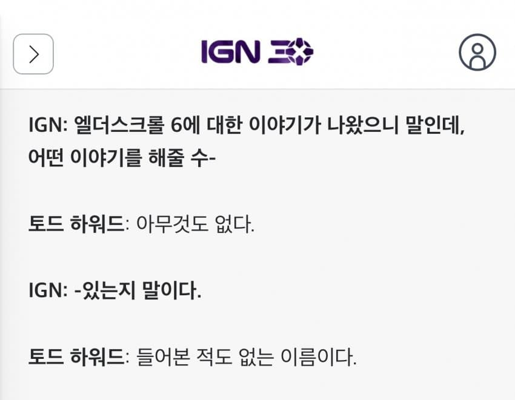

https://kr.ign.com/starfield/14504/interview/todeu-haweodeuga-eldeoseukeurol-6-jinhaeng-sanghwang-seutapildeu-ps5-poting-bedeseudayi-miraereul-ma
GTA6 보다 보안이 얼마나 단단하면
유출 사진 한장이 없음

https://kr.ign.com/starfield/14504/interview/todeu-haweodeuga-eldeoseukeurol-6-jinhaeng-sanghwang-seutapildeu-ps5-poting-bedeseudayi-miraereul-ma
GTA6 보다 보안이 얼마나 단단하면
유출 사진 한장이 없음
솔직히 쟤가 엘더6 뽑아봐야 이제 스카이림 모더들 한테 개쳐발릴거같다.
꼬우면 내서 증명해보던지 해야되는데 용기도없는 비잉신
진짜 없다고
좆같은 업데이트로 모더들이랑 유저들 고통주지말고 그 인력으로 차기작 개발이나 해라 토드 씹놈아
한국인들은 Chinese 번역을 이용하실 수 있습니다. Enjoy